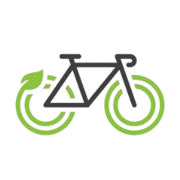
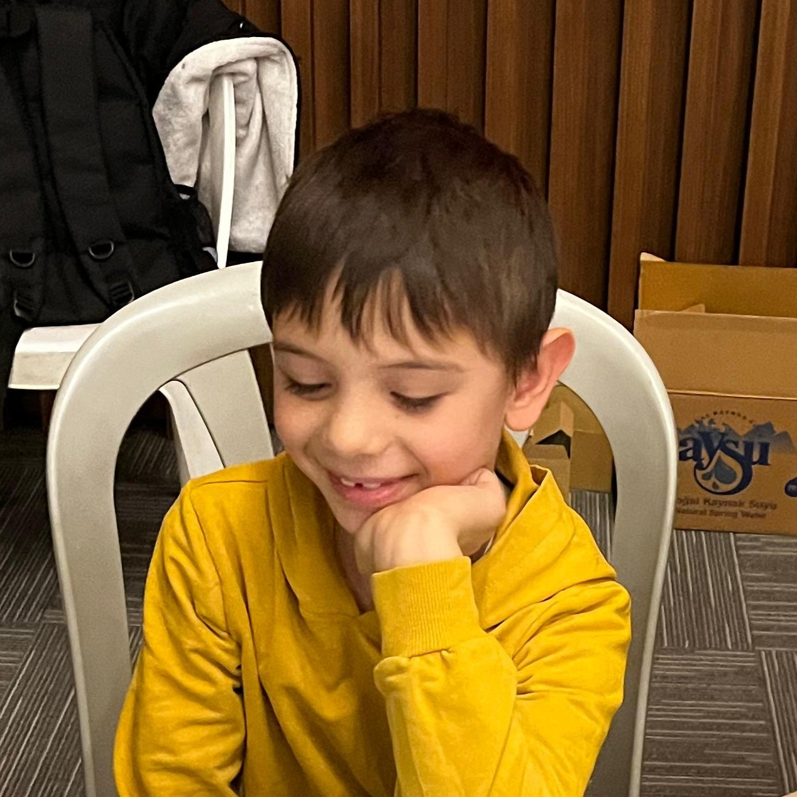

Çevre dostu ulaşımı destekliyorum!
Bisikletlerimin bakımını düzenli bir şekilde yaparım.
Güvenle kiralayabilir ve sorularınızı sorabilirsiniz.
Fatih İNCE çok ilgiliydi bisiklet tam söylendiği gibi bakımlıydı.
Bisikletle ilgili mekanik bir sorun yaşadım. Fatih İNCE kısa sürede dönüş yaptı.